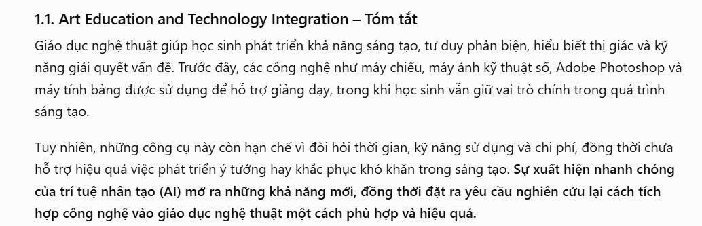
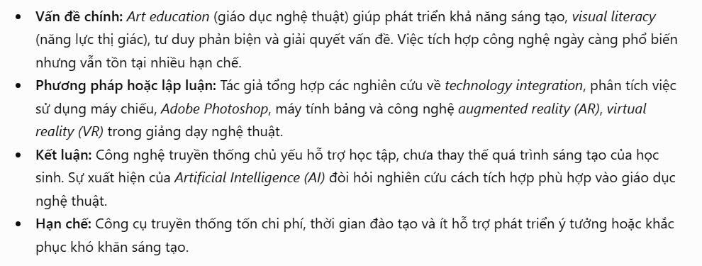
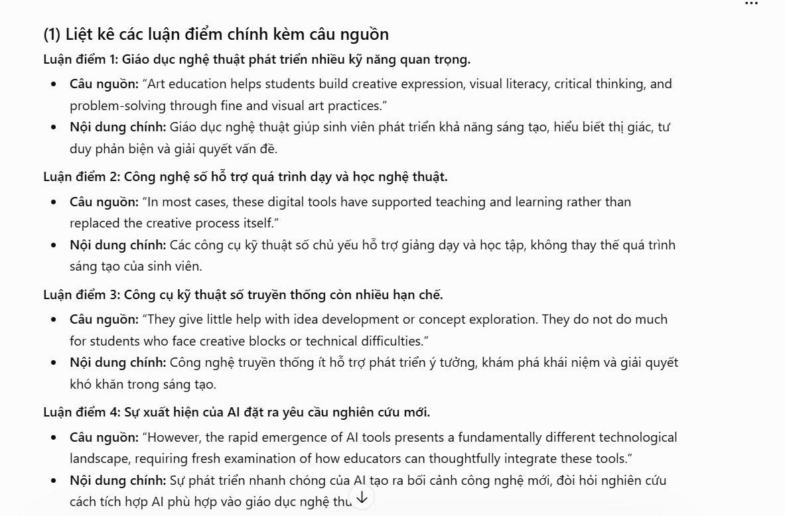

Bài 3 · Chương 3: Tổng quan về trí tuệ nhân tạo · Điểm tối đa 0,75
Bài 3: Viết Prompt hiệu quả cho các tác vụ học tập
a) Mục tiêu bài tập
Yêu cầu của bài tập: chọn 3 tác vụ học tập phổ biến (tóm tắt tài liệu, giải thích khái niệm phức tạp, tạo bộ câu hỏi ôn tập); với mỗi tác vụ viết 3 phiên bản prompt (cơ bản, cải tiến, nâng cao); thử nghiệm với một công cụ AI, so sánh kết quả, phân tích lý do và tổng hợp nguyên tắc viết prompt hiệu quả.
Kỹ năng được rèn luyện: viết prompt rõ ràng, có cấu trúc; vận dụng role prompting, chain-of-thought và few-shot examples; đánh giá và kiểm chứng đầu ra của AI.
b) Tóm tắt quá trình thực hiện
Các bước thực hiện
- Chọn 3 tác vụ: tóm tắt một tài liệu học thuật, giải thích khái niệm "mô hình khuếch tán (diffusion)", tạo bộ câu hỏi ôn tập về liêm chính học thuật.
- Viết 3 phiên bản prompt cho mỗi tác vụ (tổng 9 prompt).
- Chạy từng prompt trong một cuộc trò chuyện mới, giữ nguyên công cụ và chế độ để so sánh công bằng; chụp màn hình kết quả.
- Chấm từng kết quả theo 4 tiêu chí: độ chính xác, cấu trúc, mức phù hợp với người học, khả năng dùng ngay.
- Phân tích nguyên nhân khác biệt và tổng hợp nguyên tắc.
Công cụ đã sử dụng
- Một công cụ AI hội thoại (ví dụ ChatGPT hoặc Claude; ghi tên công cụ thực tế đã dùng)
- Công cụ chụp màn hình
Khó khăn và cách giải quyết
| Khó khăn | Cách giải quyết |
|---|---|
| Kết quả thay đổi giữa các lần chạy dù cùng một prompt. | Chạy mỗi prompt ít nhất hai lần, ghi lại xu hướng chung thay vì chỉ một kết quả. |
| Prompt nâng cao quá dài khiến AI bỏ sót yêu cầu. | Đánh số yêu cầu, tách phần ví dụ mẫu và phần dữ liệu đầu vào bằng dấu phân cách rõ ràng. |
| AI có thể đưa thông tin sai nhưng trình bày rất thuyết phục. | Luôn đối chiếu với tài liệu gốc và yêu cầu AI chỉ rõ chỗ không chắc chắn. |
Khai báo sử dụng AI: [ghi rõ công cụ AI và mục đích đã dùng trong bài này; nếu không dùng, ghi "Không sử dụng AI"].
c) Sản phẩm cuối cùng
a) Tác vụ 1: Tóm tắt tài liệu học thuật
| Phiên bản | Nội dung prompt |
|---|---|
| Cơ bản | Tóm tắt bài này: 1.1. Art Education and Technology Integration Art education helps students build creative expression, visual literacy, critical thinking, and problem-solving through fine and visual art practices (Dobbs, 1998; Freedman, 2025; E. Zimmerman, 2009). As educational contexts increasingly incorporate digital tools and technologies, art education has become a site for examining how emerging technologies intersect with fundamental pedagogical goals (Black & Browning, 2011). Over time, teachers have brought different technologies into art classrooms. They have used slide projectors to show famous artworks, digital cameras to record projects, and software such as Adobe Photoshop for image editing. Tablets have also been used for digital drawing (Tillander, 2011). In most cases, these digital tools have supported teaching and learning rather than replaced the creative process itself. Students still made the main artistic choices and carried out their ideas (Bardzell, 2007; Jones, 1986). Yet, these tools have several limits. They take time and training to use well. They give little help with idea development or concept exploration. They do not do much for students who face creative blocks or technical difficulties. They also create extra costs for teachers and schools (Alawad, 2013). Prior research on technology integration in art education has examined diverse platforms from traditional digital tools to augmented and virtual reality (González-Zamar & Abad-Segura, 2020; Huang et al., 2016). However, the rapid emergence of AI tools presents a fundamentally different technological landscape, requiring fresh examination of how educators can thoughtfully integrate these tools. |
| Cải tiến | Hãy tóm tắt văn bản dưới đây trong tối đa 150 từ cho sinh viên năm nhất. Gồm 4 phần: vấn đề chính, phương pháp hoặc lập luận, kết luận, hạn chế. Trình bày bằng gạch đầu dòng, viết tiếng Việt, giữ nguyên thuật ngữ tiếng Anh quan trọng. Văn bản: 1.1. Art Education and Technology Integration Art education helps students build creative expression, visual literacy, critical thinking, and problem-solving through fine and visual art practices (Dobbs, 1998; Freedman, 2025; E. Zimmerman, 2009). As educational contexts increasingly incorporate digital tools and technologies, art education has become a site for examining how emerging technologies intersect with fundamental pedagogical goals (Black & Browning, 2011). Over time, teachers have brought different technologies into art classrooms. They have used slide projectors to show famous artworks, digital cameras to record projects, and software such as Adobe Photoshop for image editing. Tablets have also been used for digital drawing (Tillander, 2011). In most cases, these digital tools have supported teaching and learning rather than replaced the creative process itself. Students still made the main artistic choices and carried out their ideas (Bardzell, 2007; Jones, 1986). Yet, these tools have several limits. They take time and training to use well. They give little help with idea development or concept exploration. They do not do much for students who face creative blocks or technical difficulties. They also create extra costs for teachers and schools (Alawad, 2013). Prior research on technology integration in art education has examined diverse platforms from traditional digital tools to augmented and virtual reality (González-Zamar & Abad-Segura, 2020; Huang et al., 2016). However, the rapid emergence of AI tools presents a fundamentally different technological landscape, requiring fresh examination of how educators can thoughtfully integrate these tools. |
| Nâng cao | Vai trò: bạn là trợ lý nghiên cứu giàu kinh nghiệm, hướng dẫn sinh viên nghệ thuật đọc tài liệu học thuật. Hãy làm lần lượt: (1) liệt kê các luận điểm chính, mỗi ý kèm câu nguồn trong văn bản; (2) loại bỏ chi tiết phụ; (3) viết bản tóm tắt tối đa 150 từ; (4) tự kiểm tra từng ý có thật sự xuất hiện trong văn bản không và đánh dấu ý chưa chắc chắn. Không được thêm thông tin ngoài văn bản. Ví dụ mẫu: Văn bản: "Khảo sát cho thấy nhiều sinh viên dùng AI để viết bài nhưng ít người ghi rõ nguồn." Tóm tắt: "Vấn đề: sinh viên dùng AI nhưng thiếu minh bạch. Kết luận: cần quy định ghi nguồn." Văn bản cần tóm tắt: 1.1. Art Education and Technology Integration Art education helps students build creative expression, visual literacy, critical thinking, and problem-solving through fine and visual art practices (Dobbs, 1998; Freedman, 2025; E. Zimmerman, 2009). As educational contexts increasingly incorporate digital tools and technologies, art education has become a site for examining how emerging technologies intersect with fundamental pedagogical goals (Black & Browning, 2011). Over time, teachers have brought different technologies into art classrooms. They have used slide projectors to show famous artworks, digital cameras to record projects, and software such as Adobe Photoshop for image editing. Tablets have also been used for digital drawing (Tillander, 2011). In most cases, these digital tools have supported teaching and learning rather than replaced the creative process itself. Students still made the main artistic choices and carried out their ideas (Bardzell, 2007; Jones, 1986). Yet, these tools have several limits. They take time and training to use well. They give little help with idea development or concept exploration. They do not do much for students who face creative blocks or technical difficulties. They also create extra costs for teachers and schools (Alawad, 2013). Prior research on technology integration in art education has examined diverse platforms from traditional digital tools to augmented and virtual reality (González-Zamar & Abad-Segura, 2020; Huang et al., 2016). However, the rapid emergence of AI tools presents a fundamentally different technological landscape, requiring fresh examination of how educators can thoughtfully integrate these tools. |
b) Tác vụ 2: Giải thích khái niệm phức tạp
| Phiên bản | Nội dung prompt |
|---|---|
| Cơ bản | Giải thích mô hình khuếch tán. |
| Cải tiến | Giải thích mô hình khuếch tán (diffusion model) trong tạo ảnh bằng AI cho sinh viên ngành nghệ thuật không có nền tảng toán. Tối đa 300 từ, có một phép ẩn dụ đời thường, chia 3 phần: ý tưởng chính, cách hoạt động, ví dụ ứng dụng. |
| Nâng cao | Vai trò: bạn là giảng viên giàu kinh nghiệm giải thích khái niệm khó cho người mới. Hãy suy luận từng bước: (1) xác định 3 ý cốt lõi cần hiểu; (2) chọn một phép ẩn dụ gần gũi với hội họa; (3) giải thích theo thứ tự từ đơn giản đến phức tạp; (4) kết thúc bằng 3 câu hỏi kiểm tra hiểu bài. Ví dụ mẫu về phong cách giải thích: "Nén ảnh JPEG giống như vẽ phác thảo, bỏ bớt chi tiết mắt thường khó thấy nhưng vẫn giữ được bức tranh." Đối tượng: sinh viên sư phạm nghệ thuật. Độ dài: tối đa 350 từ. |
c) Tác vụ 3: Tạo bộ câu hỏi ôn tập
| Phiên bản | Nội dung prompt |
|---|---|
| Cơ bản | Tạo câu hỏi ôn tập về liêm chính học thuật. |
| Cải tiến | Tạo 10 câu hỏi trắc nghiệm, mỗi câu 4 đáp án, về liêm chính học thuật trong môi trường số cho sinh viên đại học (đạo văn, trích dẫn, sử dụng AI). Phân bố độ khó: 5 dễ, 3 trung bình, 2 khó. Cuối bài có đáp án và giải thích một câu cho mỗi câu hỏi. |
| Nâng cao | Vai trò: bạn là giảng viên thiết kế đề kiểm tra. Hãy làm lần lượt: (1) lập bảng chủ đề cần kiểm tra và mức độ nhận thức; (2) viết 10 câu hỏi theo mẫu bên dưới; (3) kiểm tra từng câu để chắc chắn chỉ có một đáp án đúng, sửa nếu cần; (4) xuất kết quả dạng bảng gồm câu hỏi, đáp án, giải thích. Mẫu: "Câu 1. Hành vi nào sau đây là đạo văn? A. ... B. ... C. ... D. ... Đáp án: B. Giải thích: ..." Chủ đề: đạo văn, trích dẫn, quyền riêng tư dữ liệu, khai báo sử dụng AI. |



d) Bảng so sánh kết quả
Bảng dưới đây ghi các xu hướng thường gặp khi so sánh ba mức prompt. Hãy đối chiếu với kết quả thực tế của bạn và sửa lại nhận xét nếu khác.
| Tiêu chí | Cơ bản | Cải tiến | Nâng cao |
|---|---|---|---|
| Độ chính xác | Dễ chung chung, có thể lệch trọng tâm | Bám sát yêu cầu hơn | Cao nhất, có bước tự kiểm tra |
| Cấu trúc | Không ổn định, độ dài tùy ý | Đúng số phần, độ dài yêu cầu | Đúng cấu trúc và có phần phụ (câu hỏi kiểm tra, chú thích nguồn) |
| Phù hợp người học | Thấp, không rõ đối tượng | Khá, đúng trình độ | Cao, ngôn ngữ và ví dụ sát đối tượng |
| Khả năng dùng ngay | Cần chỉnh sửa nhiều | Chỉnh sửa ít | Thường dùng được ngay sau khi kiểm chứng |
e) Vì sao một số prompt hiệu quả hơn
- Prompt cải tiến nêu rõ đối tượng, độ dài, cấu trúc, nên mô hình ít phải đoán ý người dùng (Anthropic, không rõ năm).
- Prompt nâng cao thêm vai trò để định hướng giọng điệu và mức độ chuyên môn.
- Chain-of-thought (suy luận từng bước) giúp mô hình xử lý có trình tự và giảm sai sót ở tác vụ nhiều bước (Wei et al., 2022).
- Few-shot examples cho mô hình một mẫu cụ thể để bắt chước định dạng và phong cách (Brown et al., 2020).
f) Nguyên tắc và mẹo viết prompt hiệu quả
- Nêu vai trò của AI và đối tượng người đọc.
- Nói rõ mục tiêu cuối cùng của tác vụ.
- Cung cấp ngữ cảnh và dữ liệu đầu vào đầy đủ, tách riêng bằng dấu phân cách.
- Quy định định dạng, độ dài, ngôn ngữ của đầu ra.
- Chia tác vụ lớn thành các bước nhỏ có thứ tự.
- Đưa ví dụ mẫu khi cần định dạng hoặc phong cách cụ thể.
- Thêm ràng buộc: không bịa thông tin, nêu rõ chỗ chưa chắc chắn.
- Lặp và cải tiến: đọc kết quả, bổ sung yêu cầu, chạy lại.
- Kiểm chứng kết quả với nguồn gốc trước khi sử dụng.
Tài liệu tham khảo (Harvard)
- Anthropic (không rõ năm) Prompt engineering overview. Truy cập tại: https://docs.claude.com/en/docs/build-with-claude/prompt-engineering/overview (Ngày truy cập: 24/10/2026).
- Brown, T.B. et al. (2020) 'Language models are few-shot learners', Advances in Neural Information Processing Systems, 33.
- Wei, J. et al. (2022) 'Chain-of-thought prompting elicits reasoning in large language models', Advances in Neural Information Processing Systems, 35.